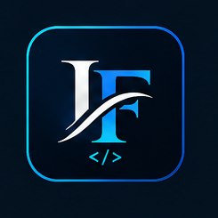

Application web
Light of Knowledge
Développement progressif d'une plateforme de formation en ligne.
Découvrir le projet →Bienvenue sur mon portfolio
Étudiant en BTS SIO option SLAM, je développe mes compétences dans la conception et la réalisation d'applications web. Je souhaite poursuivre mes études en alternance et évoluer vers le développement full stack.

Découvrez quelques réalisations issues de ma formation et de mes projets personnels.
Application web
Développement progressif d'une plateforme de formation en ligne.
Découvrir le projet →Développement web
Conception d'une interface de recherche de praticiens et de prise de rendez-vous.
Découvrir le projet →Infrastructure et support
Installation et configuration d'un environnement GLPI pour la gestion de parc informatique.
Découvrir le projet →